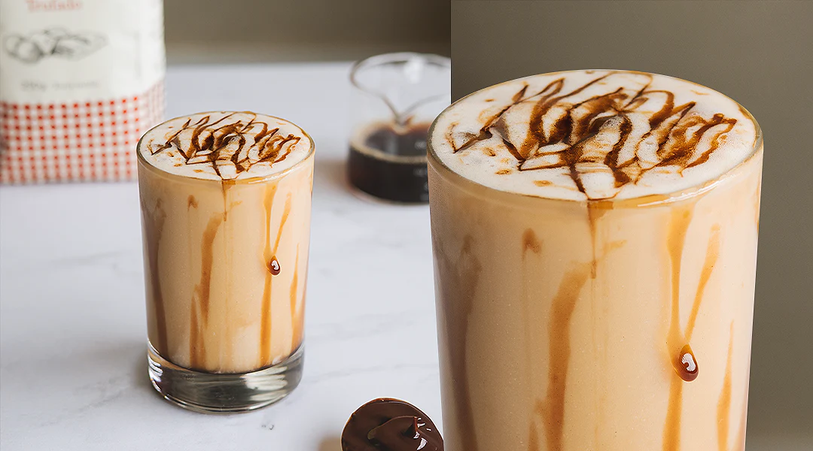
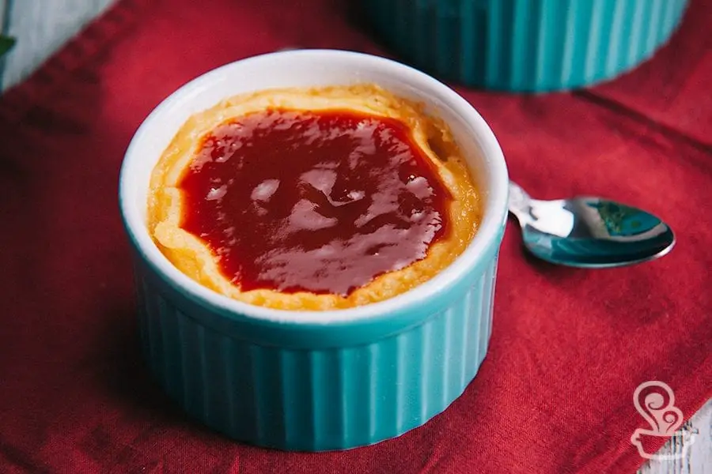

Nossas Receitas
Prepare-se para transformar sua cozinha em um verdadeiro laboratório de sabores!
Brigadeiro de Café
Tempo de preparo: 15 Minutos
Ingredientes:
- 1 lata de leite condensado
- 1 colher (sobremesa) cheia de chocolate em pó
- 1 colher (sobremesa) rasa de café
- 60 g de margarina
Modo de Preparo:
Coloque o leite condensado, a margarina e o café em uma panela ao fogo; Espere o café se dissolver (sempre mexendo para não agarrar); Depois que o café estiver mais ou menos dissolvido, acrescente o chocolate em pó; Abaixe o fogo e continue mexendo até dar ponto de brigadeiro; Se quiser enrolar, pegue uma pequena porção com uma colher e enrole na mão, depois passe no chocolate em pó.
Arroz Cremoso
Tempo de preparo: 20 Minutos
Ingredientes:
- 3 colheres de sopa de azeite
- 1/2 cebola
- 1 talo de alho-poró
- 1 e 1/2 xícara de chá de arroz branco cozido (amanhecido)
- 3 colheres de sopa de Maionese Hellmann's1 e 1/2 xícara de chá de arroz branco cozido (amanhecido)
- 1 xícara de chá de água
- 1/2 xícara de chá de cheiro-verde
- queijo parmesão ou queijo mussarela ralada para finalizar
Modo de Preparo:
Em uma panela coloque o azeite, refogue a cebola, cenoura e o alho-poró; Junte o arroz cozido (amanhecido) e mexa bem até aquecer; Acrescente a maionese Hellmann's e adicione a água aos poucos, misture até ficar bem cremosa; Desligue o fogo, salpique o cheiro verde e finalize com o queijo de sua preferência.
Mousse de Maracuja

Tempo de preparo: 10 Minutos
Ingredientes:
- 1 lata de leite condensado
- 1 lata de creme de leite
- A mesma medida de suco concentrado de maracujá
- Sementes de maracujá para decorar
Modo de Preparo:
Bata todos os ingredientes no liquidificador, exceto as sementes; Coloque em um refratário, decore e leve à geladeira por alguns minutos.
Pão de Queijo de Liquidificador
Tempo de preparo: 15 Minutos
Ingredientes:
- 1 xícara (chá) de Leite Líquido
- 1 ovos
- 2 xícaras (chá) de polvilho doce
- 1 xícara (chá) de queijo parmesão ralado
- 3 colheres de sopa de Maionese Hellmann's1 e 1/2 xícara de chá de arroz branco cozido (amanhecido)
- 1 pitada de sal
Modo de Preparo: Em um liquidificador, coloque o Leite NINHO, o óleo, os ovos, o polvilho, o queijo e o sal e bata até obter uma mistura homogênea; Despeje a massa até a metade de forminhas para empadas untadas; Leve para assar em forno médio (180°C) preaquecido por cerca de 15 minutos ou até dourar; Reserve para amornar e desenforme.
Bolo de Chocolate na Airfryer
Tempo de preparo: 35 Minutos
Ingredientes:
- 1 xícara (chá) de óleo
- 1 xícara (chá) de Leite Líquido
- 3 ovos
- 2 e meia xícaras (chá) de farinha de trigo
- 1 e meia xícara (chá) de açúcar
- meia xícara (chá) de Chocolate em Pó
- 1 colher (sopa) de fermento em pó
Cobertura:
- meia xícara (chá) de Chocolate em Pó
- 1 xícara (chá) de açúcar
- 2 colheres (sopa) de manteiga
- meia xícara (chá) de Leite Líquido
Modo de Preparo:1. Pré-aqueça a Airfryer a 160ºC; Em um recipiente bata todos os ingredientes com o auxílio de um batedor de arame ou espátula; Despeje a massa em uma forma redonda de furo central (19 cm de diâmetro) alta e que caiba em sua Airfryer, untada e enfarinhada. Coloque-a no cesto da fritadeira e deslize para dentro. Ajuste o timer para cerca de 20 minutos e asse até que cresça e fique firme. Retire, espere amornar e desenforme. Reserve. Cobertura Em uma panela em fogo médio, misture todos os ingredientes e deixe ferver por cerca de 10 minutos, mexendo até engrossar. Despeje a cobertura sobre o bolo reservado e sirva.
Tortinha de Maçã na Air Fryer
Tempo de preparo: 45 Minutos
Ingredientes:
- 1 pacote de Biscoito TOSTINES® Especiarias
- meia xícara (chá) de manteiga sem sal
- meia lata de Leite MOÇA®
- 3 gemas
- 3 maças em fatias finas
Modo de Preparo:
Em um processador, triture o Biscoito TOSTINES Especiarias com a manteiga até formar uma massa com aspecto de areia molhada. Transfira essa massa para forminhas de torta e reserve; Em um recipiente, misture o Leite MOÇA com as gemas. Transfira esse creme para as forminhas reservadas e, em seguida, arrume as maças por cima do creme, com a casca virada para cima; Leve para assar na AirFryer pré-aquecida 180ºC por cerca de 20 minutos ou até que estejam douradas. Sirva quente com uma bola de sorvete.
Café Gelado Cremoso
Tempo de preparo: 25 Minutos
Ingredientes:
- 70ml de café Baggio, previamente preparado e resfriado
- Gelo a gosto
- 2 colheres de sopa de leite condensado;
- 3 colheres de sopa de creme de leite;
Modo de Preparo:
Em um copo, misture o café resfriado com o leite condensado; Adicione os cubos de gelo; Acrescente o creme de leite e finalize com o chantilly por cima; Delicie-se com a textura cremosa deste café irresistível.
Sanduiche de Forno
Tempo de preparo: 50 Minutos
Ingredientes:
- pão de forma (quantidade que desejar)
- 250 gramas de maionese1/2 cebola
- molho de tomate pronto
- 200 gramas de presunto fatiado
- 200 gramas de muçarela fatiada
- 250 gramas de requeijão cremoso
- 1 tomate cortado em rodelas
- leite para umedecer o pão de forma
- orégano a gosto
Modo de Preparo:
Em uma tigela adicione a maionese, o requeijão cremoso, misture bem e reserve; Em uma forma espalhe molho de tomate e faça uma camada com pão de forma levemente úmido com leite; Em cima da primeira camada de pão, adicione o creme de requeijão com maionese; Faça uma camada de presunto fatiado e uma camada de muçarela fatiada; Cubra o recheio com mais uma camada de molho de tomate e faça mais uma camada com pão umedecido no leite; Repita mais uma camada de creme + presunto + queijo e tampe a torta com mais uma camada de pão; Passe o creme em cima da última camada e adicione queijo muçarela em cima; Decore com rodelas de tomate e orégano a gosto; Leve o lanche para o forno preaquecido a 180º por 25 minutos; Depois é só servir!
Romeu e Julieta no forno
Tempo de preparo: 45 Minutos
Ingredientes:
- 4 ovos
- 2 copos de requeijão
- 1 lata de creme de leite
- 600 gramas de goiabada em fatias
- Farinha de trigo o quanto baste para empanar
Modo de Preparo:
1 No liquidificador, coloque os ovos, o requeijão e o creme de leite. Bata até que vire uma mistura homogênea. Passe cada uma das fatias de goiabada na farinha de trigo para empanar. Com as fatias de goiabada empanadas, forre as laterais e o fundo de uma travessa. Cubra as fatias de goiabada com a mistura do liquidificador. Leve ao forno preaquecido a 180 graus Célsius por 35 minutos. Sua receita de Romeu e Julieta no forno está pronta para servir. Bom apetite!